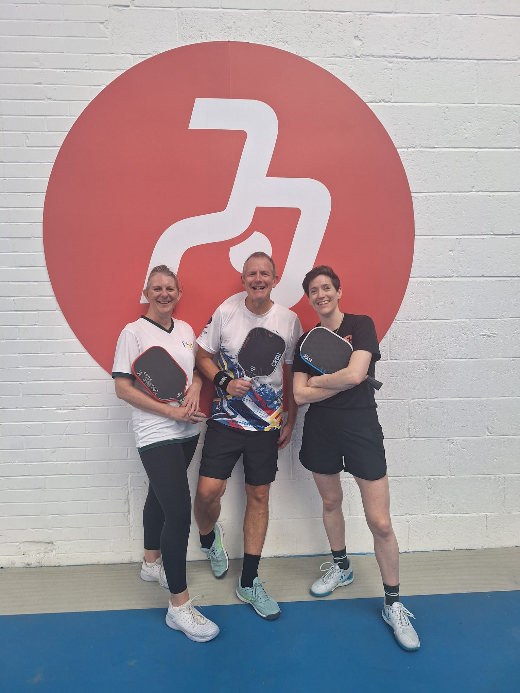

Sheffield surprised us — it turns out to be the UK's biggest city for outdoor pickleball, with courts scattered across its parks on top of Peak Pickleball's dedicated indoor centre. We played at Peak Pickleball in Attercliffe, a small, friendly club run by two local enthusiasts, and put the match through PBVision. We didn't get to every court, but here's the full picture of where to play.

Peak Pickleball is a small indoor club on Newhall Rd in Attercliffe, with three dedicated courts. It's run by two local enthusiasts, and it shows — the club has a genuinely friendly, inclusive feel, with games pitched for players at every level, from complete beginners right up to 4.0+.
Opening hours vary through the week: 10am–9pm Tuesday, Wednesday and Friday, 11am–9pm Thursday, 4pm–9pm Monday, and 9am–6pm on weekends. Courts run £22/hour off-peak and £26/hour peak, or £12 for a two-hour open play session — straightforward pricing with no membership required to drop in.
Our take: exactly what you want from a local club as a travelling player — easy to book into, no friction getting on court, and a genuinely warm welcome.
We filmed our game against Neil & Emma at Peak Pickleball and ran it through PBVision to see what the footage showed beyond the scoreline.
The model's top growth signal from this game: legal serve consistency, at 81% — the single biggest lever for Dave's next session. Third-shot execution was a genuine strength at 88% legal, and dinks were flawless at 100% consistency.
Watch the full PBVision breakdown →| Court quality | ★★★★☆ |
| Quality of games | ★★★★☆ |
| Ease of joining | ★★★★★ |
| Competitive level | ★★★★☆ |
| Value | ★★★★☆ |
| Wanderers rating | 8/10 |
Would we go back? Yes, without hesitation. It's a small club rather than a big-name facility, but the welcome, the mixed-level games and the straightforward drop-in pricing make it an easy recommendation for any travelling player passing through South Yorkshire.
We also played at Bingham Park — two nice fenced outdoor courts, with pickleball lines overlaid on the tennis courts (the net sits a little taller than a dedicated pickleball net as a result). Pay-as-you-play booking through Parks Tennis, no membership needed, and being fenced off it feels a bit more private than a typical park court.
A genuinely active local community group running low-cost and free sessions across Sheffield's park courts — Hillsborough, High Hazels and Hollinsend sessions are free, with £3.50 for two hours at other venues and sessions. Bookings run through the Spond app rather than a website booking system, so it's worth joining their group ahead of a visit if you want a game outside Peak Pickleball's timetable.
A council-run leisure centre with a six-court indoor sports hall that hosts badminton and pickleball sessions through Everyone Active — worth checking the timetable if you'd rather play indoors than book one of the outdoor park courts nearby.
Three courts fill up fast for such a friendly, well-run club — booking a day or two ahead is worth it, especially around peak evening hours.
Their sessions run across several park courts citywide and are some of the cheapest games in the city — but booking goes through the Spond app, not a website.
Between council park courts and Parks Tennis venues like Bingham Park, Sheffield has more dedicated outdoor pickleball lines than any other UK city we've visited — worth exploring if the weather's on your side.